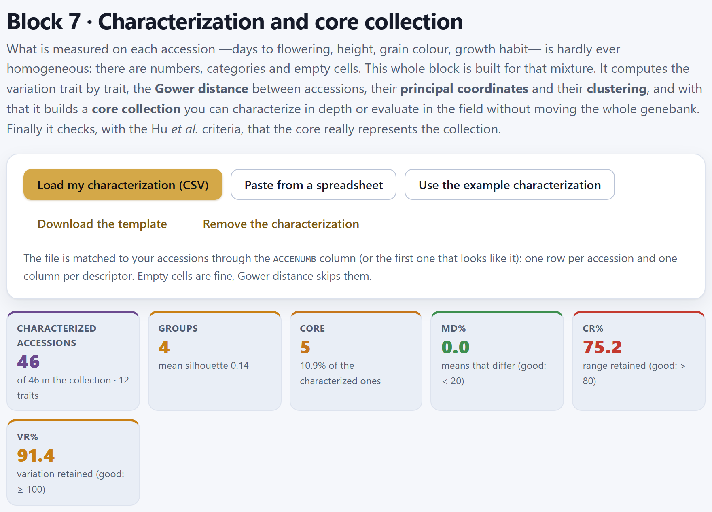
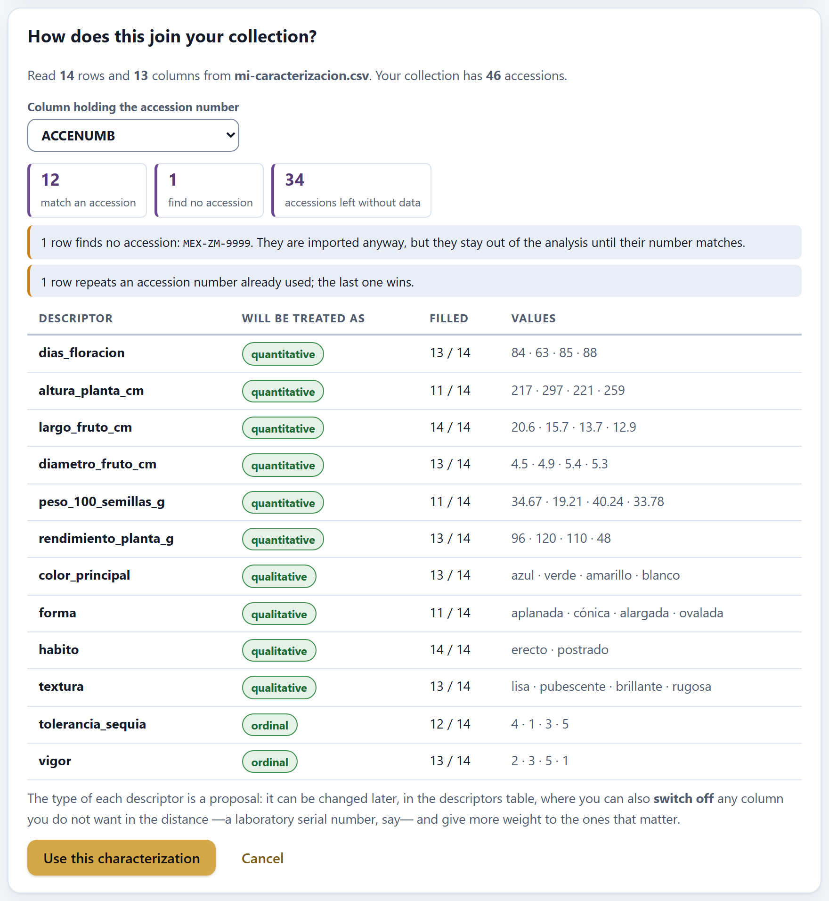
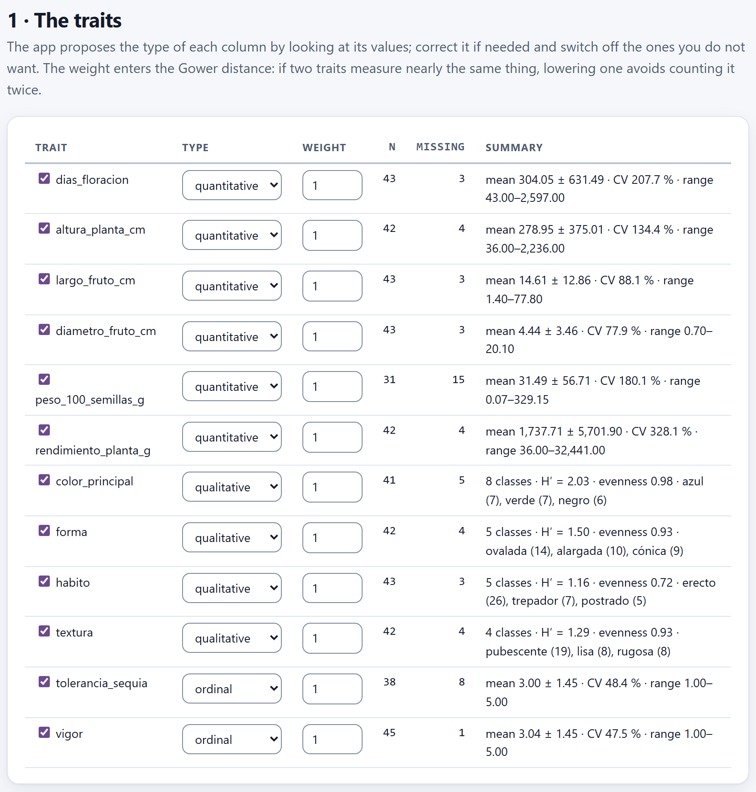
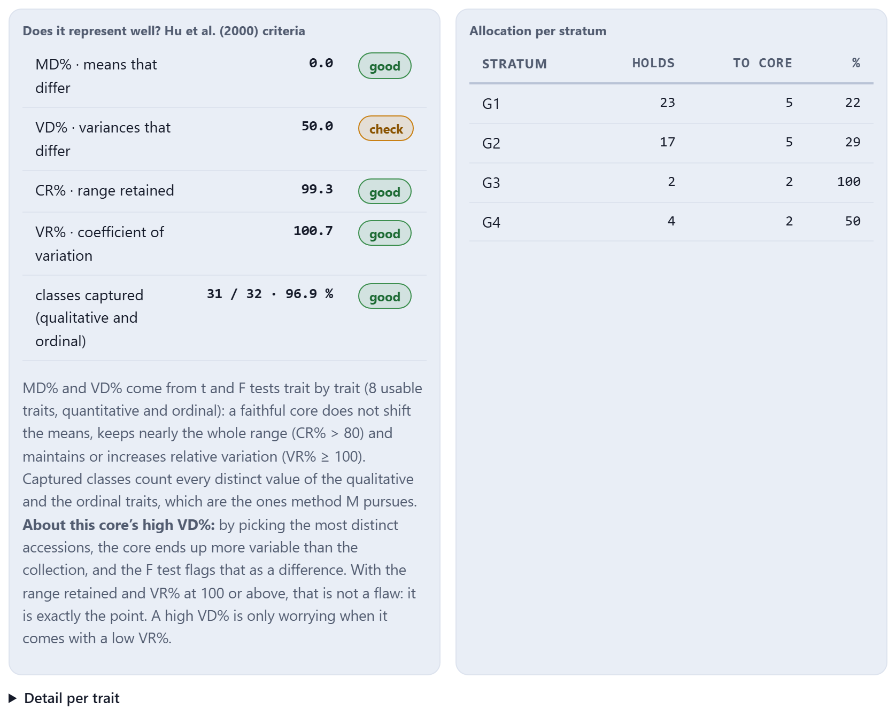
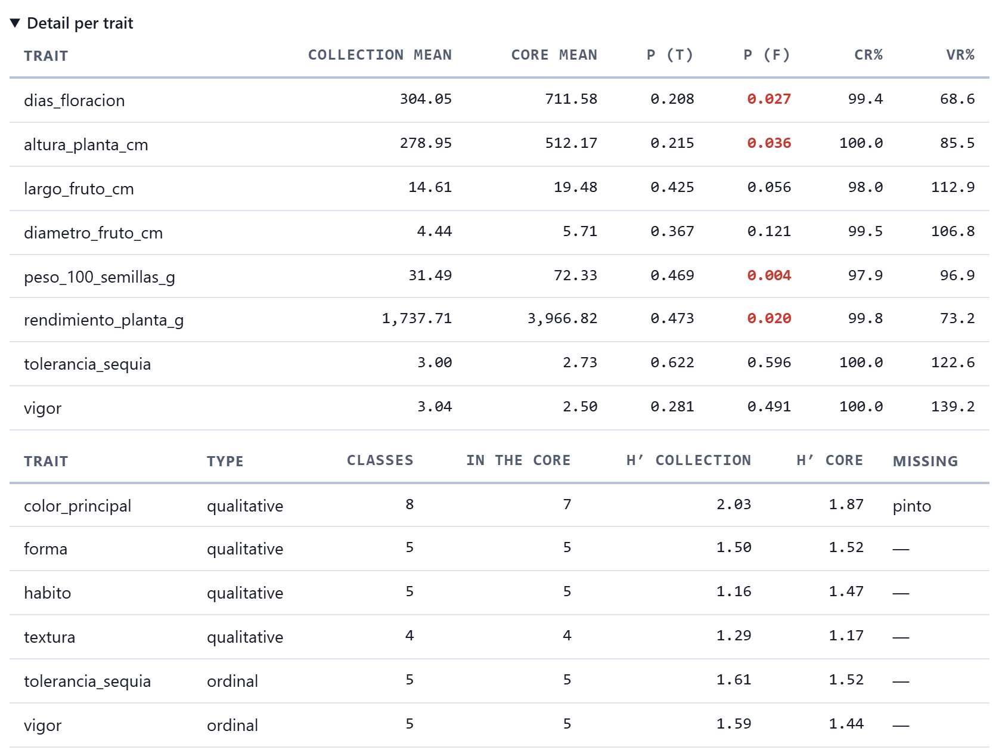
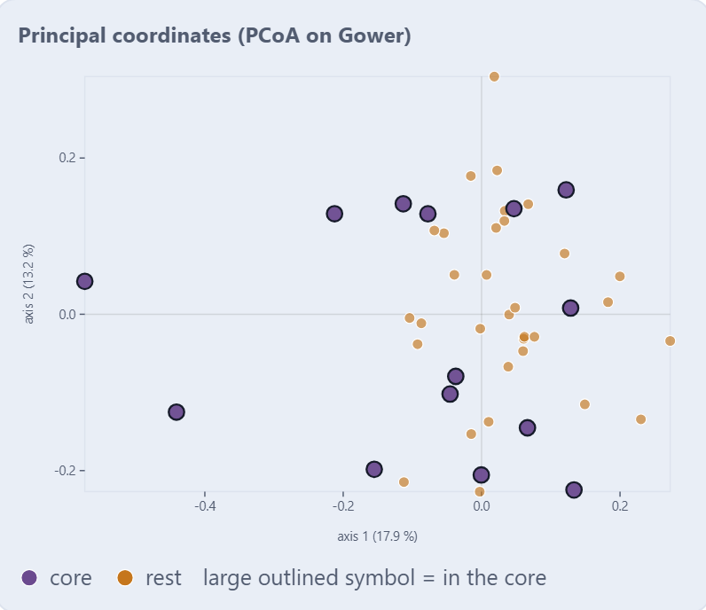
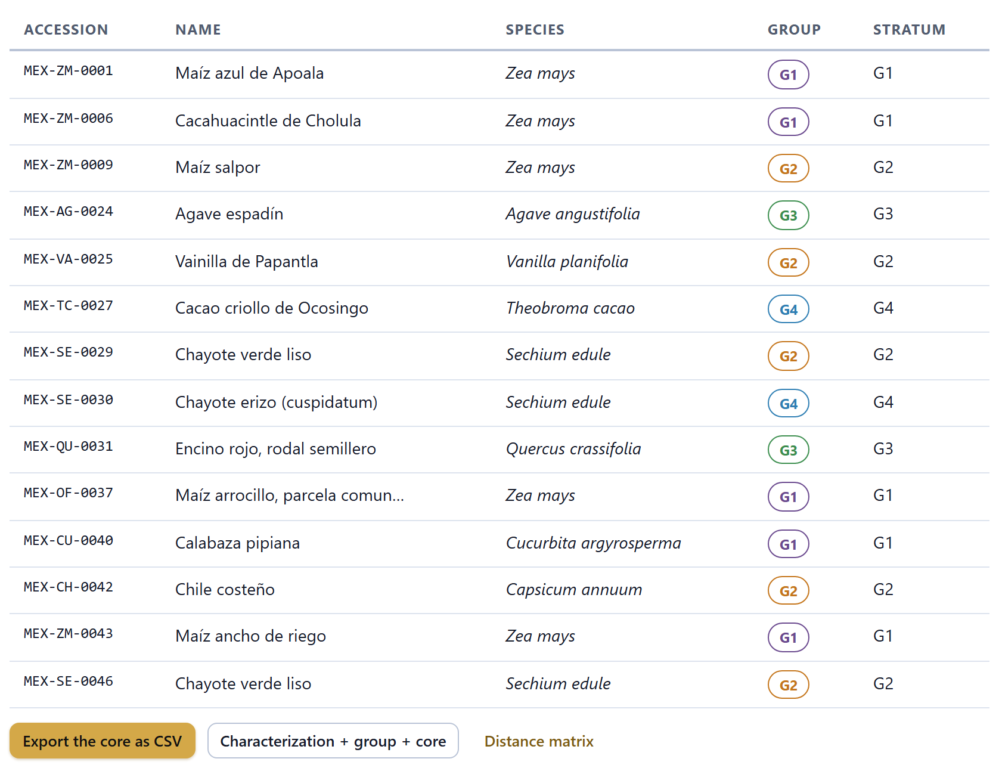

Characterization and core collection
The passport says who each accession is and where it comes from; characterization says what it is like. Block 7 takes what you measured in the field and in the laboratory —numbers, scales, colors and empty cells, all together—, describes the variation trait by trait, measures how alike the accessions are with Gower’s distance, lays them out on a map of resemblance and in a tree and, with all that, builds a core collection: the small subset you can characterize in depth or evaluate in the field without moving the whole genebank. Finally, it checks with the criteria of Hu et al. that the core truly represents the collection.
- 7.1Bringing in the characterization and joining it to the collection
- 7.2The traits: type, weight and variation
- 7.3Gower’s distance
- 7.4The map of resemblance: principal coordinates
- 7.5Clustering and the silhouette
- 7.6The core collection: strata, allocation and choice
- 7.7Does it represent well? The criteria of Hu et al.
- 7.8Exporting, and how the core changes with the options
7.1Bringing in the characterization and joining it to the collection
Block 7 works with two tables: the passport from Block 2 (Chapter 2) and a characterization table with one row per accession and one column per descriptor. The two are joined through the accession number, ACCENUMB, which is the key of the whole app. If there is no passport, the block says Load your accessions in Block 2 first.; if there is a passport but no characterization, No characterization data yet: load yours or open the example ones with the button above.

| Button | What it does |
|---|---|
| Load my characterization (CSV) | Reads a delimited .csv, .tsv or .txt file and opens the confirmation card (Figure 7.2). |
| Paste from a spreadsheet | Opens the same paste window as Block 2 (Section 2.3), titled Paste your characterization. Copy the block of cells with its header row and paste it; it also ends in the confirmation card. |
| Use the example characterization | Generates the example characterization for the loaded accessions and computes the whole block at once, with the animated wait Computing characterization and core. |
| Download the template | Saves characterization-template.csv: the ACCENUMB column already filled with all your accessions and six empty columns with the keys of the descriptor catalog: DIAS_FLORACION, ALTURA_PLANTA, LARGO_FRUTO, COLOR_EXTERNO, FORMA_FRUTO and HABITO. These are the same keys Block 2 recognizes as characterization on import (Section 2.5). Remove the ones you do not measure and add your own. |
| Remove the characterization | Asks first and, if you confirm, deletes the saved characterization and leaves the block empty. The Block 2 accessions are not touched; if you loaded it from a file, just load it again. |
The characterization is saved in the browser’s local storage, next to the passport: if you close the app and open it again, it is still there. It never leaves your computer.
Twelve descriptors for the 46 accessions of the example collection, generated by the app with synthetic data: six quantitative (dias_floracion, altura_planta_cm, largo_fruto_cm, diametro_fruto_cm, peso_100_semillas_g, rendimiento_planta_g), four qualitative (color_principal, forma, habito, textura) and two 1-to-5 scales (tolerancia_sequia, vigor). The quantitative ones come from a normal distribution with a mean specific to each genus —an agave takes years to flower and an oak is meters tall—; growth habit follows the genus (trees are arboreal, vanilla and chayote are climbers), and color, shape, texture and the two scales are drawn at random. About 8% of the cells are left empty on purpose. The same collection always yields the same values, so you can reproduce every figure in this chapter. The names of the columns and of the classes (azul, erecto…) are data and stay as the app writes them.
The “How does this join your collection?” card
When you load or paste a table, the app does not accept it yet: first it shows the only thing that really matters, how many of its rows find their accession. The key column is chosen automatically —the first one whose header resembles ACCENUMB, accesión or accession; if none does, the first column— and it is changed in the Column holding the accession number selector; the count is redone instantly.

The three tiles say how many rows match an accession, how many find no accession and how many accessions of the collection are accessions left without data. If no row matches, the red warning says that the key column is almost certainly the wrong one. Orphan rows are imported anyway, but they stay out of the analysis until their number matches; if a number is repeated, the last row wins (in the figure, 1 row repeats an accession number already used; the last one wins.). The table below proposes the type of each descriptor (Section 7.2) and shows how many cells are filled and up to four distinct sample values. Use this characterization accepts it and computes the block; Cancel discards it.
Only the accessions that have a row in the characterization enter Block 7: the Characterized accessions tile says how many there are, “of 46 in the collection”. The distance, the tree, the core and its validation are computed on them. If you characterized half the genebank, the core represents that half, not the whole genebank.
7.2The traits: type, weight and variation
The 1 · The traits section has one row per column of the characterization. In each one you decide three things: whether the trait enters (the checkbox next to its name), what type it is and how much it weighs.

The type. The app proposes it by looking at the values in the column: if more than 90% of the non-empty values are numbers (with a decimal point or comma) and there are more than six distinct values, it is quantitative; if they are numbers but six or fewer distinct ones, ordinal; in any other case, qualitative. Correct it when the proposal does not fit: a 1-to-9 scale with all its values present comes out quantitative, and a numeric color code (1 = white, 2 = yellow…) comes out ordinal or quantitative when it is really qualitative. A column with no data at all appears with the label empty instead of the selector, with the checkbox and the weight disabled: it stays out of the analysis.
The checkbox. Clearing it takes the trait out of the whole block: out of the distance, the core and its validation. Use it for columns that are not descriptors, such as a laboratory serial number or a sampling date.
The weight. It goes from 0 to 5 in steps of one half, and is 1 by default. It only enters Gower’s distance (Section 7.3): a trait with weight 2 counts as two. If two traits measure nearly the same thing —fruit length and fruit weight, for example—, lowering the weight of one avoids counting the same difference twice. With weight 0 the trait no longer influences the distance, but it stays in the validation of the core.
The summary. The n and Missing columns count filled and empty cells. For quantitative and ordinal traits, the summary gives the mean ± the standard deviation, the coefficient of variation and the range; for qualitative ones, the number of classes, the Shannon diversity H′, the evenness and the three most frequent classes with their accessions.
For a quantitative trait with n values, the standard deviation is the sample one (dividing by n − 1) and the coefficient of variation expresses it as a percentage of the mean:
For a qualitative trait with k classes, let pj be the proportion of accessions in class j. Phenotypic diversity is measured, as in Block 5, with the Shannon index in natural logarithm, and evenness divides it by its maximum possible value:
Evenness is 1 when all classes have the same number of accessions; with a single class it is undefined and the app writes “—”, like the J′ of Block 5. A descriptor with a high H′ and evenness close to 1 discriminates well; one with a class that takes almost everything contributes little to the distance.
The 46 example accessions belong to 18 genera, and it shows: days to flowering go from 43 to 2,597 (CV 207.7%) because next to a bean there are an agave, an avocado and an oak; yield per plant, from 36 to 32,441 g (CV 328.1%). The weight of 100 seeds is the most incomplete, with 15 empty cells, because the example gives no seed weight to eight genera (potato, oca, cassava, agave, vanilla, avocado, cacao and chayote). Among the qualitative traits, color_principal spreads 41 accessions over 8 nearly even classes: ln 8 = 2.079 and H′ = 2.03, so evenness is 2.03/2.079 = 0.98. habito has 5 classes, but 26 of 43 accessions are erecto: H′ = 1.16 and evenness 1.16/ln 5 = 1.16/1.609 = 0.72.
The six tiles of the header summarize the result of the whole block; each one is explained in its section.
| Tile | Example | What it says |
|---|---|---|
| Characterized accessions | 46 | The accessions with a row in the characterization; below, out of how many in the collection and how many traits enter (12). |
| Groups | 4 | The groups from cutting the tree; below, the mean silhouette (0.14). Green if above 0.25 (Section 7.5). |
| Core | 5 | The accessions in the core and what percentage of the characterized ones they are (10.9%). |
| MD% | 0.0 | Means that differ between core and collection; good below 20 (Section 7.7). |
| CR% | 75.2 | Range retained; good above 80. |
| VR% | 91.4 | Coefficient of variation ratio: the relative variation retained; good from 100, the same threshold in the label and in the traffic light. |
7.3Gower’s distance
To say that two accessions are alike you have to combine into a single number differences in different things: days, centimeters, colors and scales. Euclidean distance does not work —it only accepts numbers, and the trait with the largest figures would decide everything— and hardly any distance accepts empty cells. Gower’s distance (1971) solves both problems: each trait contributes a difference between 0 and 1, and the average is taken only over the traits that both accessions have measured.
Between accessions i and j, each trait k contributes a partial difference dijk:
qualitative: dijk = 0 if same class, 1 otherwise
where Rk is the range of the trait (maximum − minimum) over all the characterized accessions; if the range is 0, 1 is used. Classes are compared ignoring case. The distance is the average weighted by the weights wk, taken only over the traits both have measured (δijk = 1) and with a weight greater than 0:
It is 0 if the two accessions are identical in everything they share and 1 if they are opposite in everything. Ordinal traits are treated as quantitative: from 1 to 3 there is twice the distance as from 1 to 2.
The app does not show the matrix on screen —with 46 accessions there are 1,035 pairs—, but it exports it in full with the Distance matrix button (Section 7.8). In the example, distances go from 0.0086 to 0.8752, with a mean of 0.393. If two accessions share no measured trait, their distance is left empty and, in the principal coordinates, counts as 0.
MEX-ZM-0001 is missing its height; MEX-ZM-0002, its 100-seed weight and its drought tolerance. Those three traits do not enter; nine remain. The ranges are those of the 46 accessions.
| dias_floracion 84 and 63 | 21 / 2,554 = 0.00822 |
| largo_fruto_cm 20.6 and 15.7 | 4.9 / 76.4 = 0.06414 |
| diametro_fruto_cm 4.5 and 4.9 | 0.4 / 19.4 = 0.02062 |
| rendimiento_planta_g 96 and 120 | 24 / 32,405 = 0.00074 |
| vigor 2 and 3 | 1 / 4 = 0.25000 |
| color · forma · textura | azul/verde, aplanada/cónica, lisa/pubescente: 1 + 1 + 1 |
| habito | erecto/erecto: 0 |
| d = (0.00822 + 0.06414 + 0.02062 + 0.00074 + 0.25 + 3 + 0) / 9 = 3.34372 / 9 = 0.3715 → the exported matrix says 0.3715 | |
Look at the size of each term: a 21-day difference in flowering weighs 0.008, because the range is stretched by the oak, with 2,597 days; three different colors, shapes and textures weigh 3. In this collection, the distance is decided by the qualitative traits. That is why MEX-ZM-0002 is closer to a bean (MEX-SE-0013, d = 0.3674) than to another maize (0.3715), and the agave MEX-AG-0024 is 0.7502 away from MEX-ZM-0001.
Since each quantitative trait is divided by its range, a single very different accession —or a data-entry error, such as a height of 25,000 cm— squeezes the differences of all the others toward zero and leaves the distance in the hands of the qualitative traits. If your collection mixes very different species, characterize and build a separate core for each species or crop, or transform very skewed traits, such as yield, to logarithms in your spreadsheet first. Always check the range in the summary before reading the tree.
7.4The map of resemblance: principal coordinates
The 2 · The map of resemblance section puts the distance matrix into two plots: on the left, the principal coordinates (PCoA), a plane where accessions that are alike lie close together; on the right, the tree of the clustering (Section 7.5). Three selectors control them.
| Selector | Options and what they do |
|---|---|
| Tree | Ward.D2 or UPGMA (Section 7.5). Changes the tree, the groups and, if the core is stratified by groups, the core. |
| Groups | From 2 to 8; by default, 4. Where the tree is cut. |
| Color by | group, crop, species or core. Only changes the plot on the left; the tree is always by group. Each category gets a color and a shape (circle, square, triangle or diamond): eight colors times four shapes distinguish up to 32 categories; beyond that, the least frequent are pooled into others, with their number in parentheses in the legend. |
![The 2 · The map of resemblance section: the selectors Tree on Ward.D2, Groups on 4 and Color by group, the note Axis 1 explains 17.9 % and axis 2 13.2 % of the variation; on the left the principal coordinates plot with tick marks on the axes, the points colored by group G1 to G4 and five large outlined points that are the core; on the right the Ward dendrogram with the 46 accessions, each name in the color of its group and a merge-height scale from 0 to 1; below, the buttons PCoA as SVG and Tree as SVG](../img/en/b7-mapa.png)
Principal coordinates analysis (Gower, 1966) looks for points on a plane whose distances resemble those of the matrix as closely as possible. With D the distance matrix of n accessions, A is formed with aij = −½ dij² and is centered by rows and by columns:
B = Σ λm um umᵀ
coordinateim = uim √λm
The eigenvalues λm of B (the app obtains them with the Jacobi method) measure how much variation each axis captures. The percentage the app writes on each axis is λm divided by the sum of the positive eigenvalues. Gower with missing data is not a Euclidean distance, so some eigenvalues come out negative; the app leaves them out of the sum and applies no correction.
In the example, the sum of the positive eigenvalues is 5.518 and the first one is 0.987, so axis 1 explains 0.987/5.518 = 17.9%; the second, 0.726/5.518 = 13.2%. Together, the plane captures 31% of the variation: it is an approximate portrait. Of the 46 eigenvalues, 24 are negative. With mixed traits and many species this is normal; if the first two axes gathered more than half, the plane would be a faithful portrait.
How to read it. Each point is an accession; hover over it to see its number and its category. The tick marks on the axes are unitless coordinates: what matters is the distance between points, not their absolute position. The large points with a dark outline are the core (Section 7.6). In Figure 7.4, the two green points on the left are the oak and the agave (G3), and the large blue one is the cacao (G4); groups G1 and G2, the most numerous, mix in the center, which is what the low silhouette announces.
7.5Clustering and the silhouette
The tree on the right clusters the accessions with the same Gower matrix. Each leaf is an accession, written in the color of its group and with its branch attached to its name; branches join toward the right, and the scale at the bottom gives the merge height: the further to the right two branches join, the more different they are. With Ward the height is in Ward.D2 units; with UPGMA, in Gower’s distance. The app cuts the tree into the chosen number of groups and calls the resulting groups G1, G2… Below the two plots, PCoA as SVG saves pcoa-gower.svg and Tree as SVG, gower-tree.svg, both with the colors of the light theme.
UPGMA joins at each step the two groups with the smallest mean distance between their members. Ward.D2 (Murtagh and Legendre, 2014) joins the pair whose merger least increases the within-group sum of squares; it works with squared distances and updates with the Lance-Williams formula, the same criterion as R’s hclust(…, method = "ward.D2"). Ward tends to give groups of similar size; UPGMA respects the distances better, but leaves the rare accessions isolated and lumps the rest into one huge group. The cut into k groups splits, again and again, the highest remaining node.
The silhouette (Rousseeuw, 1987) says whether each accession sits well in its group. With a(i) the mean distance from i to the others in its group and b(i) the mean distance to the nearest neighboring group:
mean silhouette = Σ s(i) / n
s goes from −1 to 1: near 1, the accession is much closer to its group than to any other; near 0, it is on the boundary; negative, it would be better in another group. An accession alone in its group scores 0. Above 0.25 there is structure; below it, the cut is almost arbitrary.
With the example, Ward in 4 groups gives G1 with 23 accessions (twelve of Zea mays, two of them teosinte, the two potatoes, the wheat, the barley, the cassava…), G2 with 17 (other maizes, beans, the chayote, the vanilla, the oca…), G3 with 2 (the agave and the oak) and G4 with 4 (avocado, cacao, coffee and a chayote). The mean silhouette is 0.14: G3 has 0.26 and the other three between 0.13 and 0.14, and two accessions have a negative silhouette. The groups are not species: since the colors and textures of the example were drawn at random, they mix species. Table 7.4 shows what happens with other cuts.
| Groups | Ward.D2 | Sizes | UPGMA | Sizes |
|---|---|---|---|---|
| 2 | 0.298 | 6 · 40 | 0.394 | 2 · 44 |
| 3 | 0.116 | 6 · 17 · 23 | 0.272 | 2 · 1 · 43 |
| 4 | 0.140 | 23 · 17 · 2 · 4 | 0.161 | 2 · 1 · 1 · 42 |
| 5 | 0.121 | 17 · 4 · 2 · 9 · 14 | 0.148 | 2 · 1 · 1 · 3 · 39 |
| 6 | 0.133 | 14 · 9 · 4 · 2 · 7 · 10 | 0.137 | 39 · 3 · 1 · 1 · 1 · 1 |
| 8 | 0.142 | 9 · 4 · 7 · 2 · 6 · 4 · 4 · 10 | 0.020 | 3 · 1 · 1 · 1 · 1 · 1 · 1 · 37 |
How to read it to decide. The highest silhouette in the example is not the most useful partition: UPGMA with 2 groups gives 0.394 because it separates the agave and the oak from the other 44 accessions, and that organizes nothing. Ward with 2 groups (0.298) separates six perennials from the rest —the agave, the oak, the avocado, the cacao, the coffee and a chayote—: it is the only clear structure in this collection. To build the core by groups, a cut with groups of reasonable size is better, even if the silhouette is modest, than one with single-accession groups. Look for the number of groups where the silhouette has a local peak and the groups make biological sense.
7.6The core collection: strata, allocation and choice
A core collection (Frankel and Brown, 1984) is a small subset that keeps, with a minimum of repetition, most of the diversity of the whole collection. It serves to characterize in depth, to evaluate in the field or to serve requests without touching the whole genebank. The 3 · The core collection section builds it in three decisions: how many accessions, among which strata they are allocated and which ones are chosen within each stratum.
![The 3 · The core collection section with the default values: the selectors Size on 10 %, Method by strata, Strata on clusters, Allocation on Logarithmic and Within stratum the most distinct, the checkbox at least 1 per stratum cleared and the button another random draw disabled; the warning The core is too small to be judged by these figures with 5 accessions, which says that with 46 characterized the core must be 21 % or more and suggests choosing 25 %; the Hu et al. criteria table with MD% 0.0 good, VD% 62.5 check, CR% 75.2 check, VR% 91.4 check and classes captured 19 / 32 · 59.4 % check; the allocation per stratum G1 23 to 2, G2 17 to 1, G3 2 to 1 and G4 4 to 1; and, below, the Detail per trait drop-down closed](../img/en/b7-nucleo.png)
The Allocation per stratum table says, for each stratum, how many accessions it Holds, how many go To core and what percentage that is; strata left without a representative appear in gray, with 0. With method M, a sentence takes its place saying how many accessions were chosen and how many classes were left out. Below, the list of the core (Figure 7.9) gives the number, name, species, group and stratum of each chosen accession.
| Control | Options and what they do |
|---|---|
| Size | 5, 10, 15, 20, 25 or 30% of the characterized accessions, rounded to the nearest integer (10% of 46 = 4.6 → 5). The app respects it, unless you tick the checkbox below. |
| Method | by strata: allocates and chooses as explained in this section. method M (maximum classes): does not stratify; it keeps taking the accession that adds the most new classes. With method M the strata, allocation and choice selectors and the checkbox, which it does not use, are disabled. |
| Strata | clusters (the G groups of section 2), state or country (the Mexican state where the point falls or, if it falls in none, the country), crop (CROPNAME), species (genus + epithet) or no strata (a single stratum, whole collection). |
| Allocation | How many accessions each stratum gets: Constant, Proportional, Logarithmic or Square root. |
| Within stratum | the most distinct or at random. The another random draw ↻ button changes the seed of the draw; it is only active with at random. |
| at least 1 per stratum | Cleared by default. When ticked, every stratum contributes at least one accession even if that exceeds the requested size; the app warns what the actual size is. |
With a target size T and strata of sizes n1, …, ng, each stratum is entitled to the quota qh = T · wh / Σ w, where the weight wh depends on the rule (Brown, 1989):
Logarithmic: w = ln(nh + 1) · Square root: w = √nh
The constant rule gives the same to every stratum and favors the small ones; the proportional one reproduces the imbalance of the collection; the logarithmic and square-root rules lie in between, and the logarithmic one is recommended when strata are very unequal. Quotas are not integers, and the app distributes them by largest remainder: if there are at least as many places as strata, each stratum first gets one; then, place by place, the next one goes to the stratum furthest from its quota (qh minus what it already has; on a tie, to the largest), never exceeding the accessions the stratum holds. If there are more strata than places, no one gets one up front: the places go to the strata with the largest quota and the others are left without a representative. That way the sum is always T. Only with at least 1 per stratum does each stratum get one even if the sum exceeds T.
The most distinct: within the stratum, the app starts with the pair furthest apart in Gower’s distance and adds, one by one, the accession whose distance to the nearest of those already chosen is largest (maximin criterion). If the stratum gets only one, it keeps one of the two from the furthest pair. At random: sampling without replacement with a fixed seed, so that it can be repeated.
Method M (Schoen and Brown, 1993): all classes of the qualitative and ordinal traits are counted (“habito = trepador”, “vigor = 4”…); at each step the accession that adds the most classes not yet covered enters. When no new class remains, it fills the size with the accessions that have the most classes.
With the example and the size at 20% (target: 9), stratifying by species leaves 24 strata for 9 places. The app respects the size and warns 15 of 24 strata are left without a representative.: the places go to Zea mays, to two of the four beans, to two of the three squashes, to the chili, the amaranth, the husk tomato and the chayote, and the potato, the agave, the cacao and 12 other species do not enter. By state or country, 9 of 18 are left without a representative, and by crop, 14 of 23. If you tick at least 1 per stratum, the core by species rises to 24 accessions and the warning changes: The core has 24 accessions, not the 9 requested (20 %)., 52.2% of the characterized ones. With fine strata you have to choose between a core of the requested size that leaves strata out and one that covers them all but is no longer small; use coarser strata (clusters or no strata) if neither suits you.
T = 10% of 46 = 4.6 → 5. The Ward groups have 23, 17, 2 and 4 accessions.
| w = ln 24, ln 18, ln 3, ln 5 = 3.178, 2.890, 1.099, 1.609 · Σ w = 8.776 | |
| quotas q = 5 · w / Σ w = 1.81, 1.65, 0.63, 0.92 | |
| 4 strata ≤ 5 places → one to each stratum: 1, 1, 1, 1; 1 place left | |
| distance to the quota: 0.81, 0.65, −0.37, −0.08 → the place goes to G1 | |
| final allocation: G1 2, G2 1, G3 1, G4 1 = 5 → as in the Allocation per stratum table |
From G1 the maize MEX-ZM-0043 and the squash MEX-CU-0040 enter; from G2, the chili MEX-CH-0042; from G3, the agave MEX-AG-0024, and from G4, the cacao MEX-TC-0027. The two-accession group contributes half of its own; the 23-accession group, fewer than one in ten. That is exactly what is sought: what is rare weighs more than what is abundant.
With state or country, each accession goes to the Mexican state where its point falls; if it falls in none, to the country where it falls or, without coordinates, to the one in its passport. The table writes them with their name, and a state is never confused with a country: in the example, México is the State of Mexico (the teosinte and the wheat) and Mexico (no state) is the maize without coordinates, MEX-ZM-0043. The maize with the unsigned longitude, MEX-ZM-0039, forms the Myanmar stratum, because that is where its point falls: 18 strata in all. Correct the coordinates first in Blocks 2 and 3.
7.7Does it represent well? The criteria of Hu et al.
A core is judged by comparing it with the collection it came from. The Does it represent well? Hu et al. (2000) criteria box gives five figures, each with its good or check traffic light. The first four use the quantitative and ordinal traits with at least three values in the collection and two in the core (the usable traits, eight in the example); the fifth, the classes of the qualitative and ordinal traits.
For each usable trait the core is compared with the whole collection (of which the core is part). With m usable traits:
VD% = 100 · (traits with different variances) / m
Means are compared with Welch’s t test (Welch-Satterthwaite degrees of freedom) and variances with the two-tailed F test, both at 5%:
F = s²larger / s²smaller
The range and the coefficient of variation are averaged over the m traits (N = core, C = collection; R = maximum − minimum):
VR% = mean of 100 · CVN / CVC
(qualitative and ordinal: each distinct value is a class)
Hu et al. (2000) only set two thresholds: a good core has MD% < 20 and CR% > 80. Of VR% they say the larger, the better; the app asks for VR% ≥ 100, that the core does not lose relative variation compared with the collection, and uses that same threshold in the tile, in the traffic light and in the note about VD%. It also shows in green VD% < 20 and classes captured above 80%.
The yellow warning in Figure 7.5, The core is too small to be judged by these figures., appears whenever the core has fewer than 10 accessions, because with so few the t and F tests have almost no power. The warning computes how much to raise it: with 46 characterized, the core must be 21 % or more: choose 25 % under “Size”. With 25% (12 accessions) the warning disappears, CR% rises to 99.2 and VR% to 99.3, still a hair short of the 100 threshold; with 30% (14 accessions) the core passes all three criteria (Figure 7.6).
With 14 accessions, the core keeps 99.3% of the range, 100.7% of the relative variation and 31 of the 32 classes (only the color “pinto” is missing), without changing any mean. VD% stays at 50: four of eight traits have a variance different from the collection’s. As the note under the criteria table explains, that is not a flaw: by picking the accessions most distinct from each other, the core ends up more variable than the collection and the F test detects it. A high VD% is only worrying when it comes with a low VR%. The note appears when VD% is above 20 with VR% ≥ 100 and CR% > 80.

The five accessions of the core have vigor 3, 1, 1, 4 and 5; the 45 in the collection with a value, mean 3.04 and standard deviation 1.45.
| core: x̄ = 14/5 = 2.8 · s = √[(0.04 + 3.24 + 3.24 + 1.44 + 4.84)/4] = √3.2 = 1.789 · CV = 63.9% | |
| collection: CV = 100 · 1.445/3.044 = 47.5% → VR of vigor = 100 · 63.9/47.5 = 134.6 | |
| range: core 1–5, collection 1–5 → CR of vigor = 100 · t = −0.30, p = 0.78: the mean does not differ | |
| classes: color 4/8, shape 3/5, habit 3/5, texture 2/4, tolerance 3/5, vigor 4/5 → 19/32 = 59.4% |
The app averages the same over the eight usable traits. The range comes out badly in two: height (CR = 9.5) and the weight of 100 seeds (2.4), because none of the five accessions has an extreme value of those traits —the oak with 329 g per 100 seeds, for example, did not enter—; that is why CR% stays at 75.2. All these figures, trait by trait, are in the Detail per trait drop-down (Figure 7.7).
To see which trait fails, open Detail per trait, below the criteria and the allocation (Figure 7.7): for each usable trait, the means, the p of the t and F tests (in red if below 0.05), the CR% and the VR%; for each qualitative or ordinal trait, the classes, the H′ and the missing classes.

In the example, the four different variances are those of flowering, height, 100-seed weight and yield: the core brings in the agave, the oak, the cacao and the vanilla, which stretch those traits. Their means rise a lot —flowering, from 304.05 to 711.58 days— but no p of the t test falls below 0.05, because the variation within the core is also enormous.

Figure 7.8 is the best visual test: a well-built core covers the whole plane and its edges, without crowding in the center. If the large points concentrate in one area, the core is missing part of the diversity even if the figures come out well.
In the example, the two isolated points on the left —the oak and the agave— are in the core, as are the furthest ones at the top, bottom and right.
7.8Exporting, and how the core changes with the options

Look at the list carefully: the 30% core includes Chayote verde liso twice, MEX-SE-0029 and MEX-SE-0046. They are one of the pairs of duplicates seeded in the example collection (Sections 3.5 to 3.7): the app does not tell them apart because the characterization treats them as distinct accessions. Merge duplicates in Block 3 before building the core, or you will spend a place on repeating an accession.
At the end of the section there are three buttons (the two SVG plots are saved from section 2, Section 7.5):
- Export the core as CSV saves core-collection.csv, one row per accession in the core with the columns
ACCENUMB,ACCENAME,TAXON,CROPNAME,group,stratum(with its readable name, as in the table; empty with method M),coreand its two principal coordinates,pcoa1andpcoa2, with four decimals. - Characterization + group + core saves characterization-full.csv: the same columns for all the characterized accessions plus the values of the traits that enter the analysis.
- Distance matrix saves gower-distances.csv, the square Gower matrix with four decimals: the accession numbers go in the first column, headed
accession, and in the header row.
The core column says yes or no. The CSV files are in UTF-8 with a byte order mark, so that Excel respects accented characters. None of them stores the settings: write down the options you used.
The same example, other options
The core does not always improve with size, and no allocation rule always wins. With the example characterization, stratified by the Ward groups and with the most distinct accessions:
| Size | Core | MD% | VD% | CR% | VR% | Classes |
|---|---|---|---|---|---|---|
| 5% | 2 | 16.7 | 33.3 | 46.1 | 111.1 | 34.4% |
| 10% | 5 | 0.0 | 62.5 | 75.2 | 91.4 | 59.4% |
| 15% | 7 | 0.0 | 50.0 | 78.8 | 92.5 | 78.1% |
| 20% | 9 | 0.0 | 37.5 | 78.8 | 86.8 | 84.4% |
| 25% | 12 | 0.0 | 62.5 | 99.2 | 99.3 | 90.6% |
| 30% | 14 | 0.0 | 50.0 | 99.3 | 100.7 | 96.9% |
With 5% there are 2 places for 4 groups and the app warns 2 of 4 strata are left without a representative. 30% is the first size that passes MD%, CR% and VR% at once: from 25% on, the group of the agave and the oak contributes both its accessions and the range is almost complete.
| Option | Core | MD% | VD% | CR% | VR% | Classes |
|---|---|---|---|---|---|---|
| Constant allocation (3 · 2 · 2 · 2) | 9 | 0.0 | 75.0 | 99.2 | 99.9 | 84.4% |
| Proportional or square root (4 · 3 · 1 · 1) | 9 | 0.0 | 37.5 | 78.8 | 91.4 | 87.5% |
| Logarithmic (3 · 3 · 1 · 2) | 9 | 0.0 | 37.5 | 78.8 | 86.8 | 84.4% |
| Logarithmic, at random | 9 | 0.0 | 37.5 | 73.0 | 87.2 | 68.8% |
| No strata, the most distinct | 9 | 0.0 | 75.0 | 98.6 | 96.6 | 84.4% |
| Method M | 9 | 0.0 | 62.5 | 91.4 | 96.6 | 100% |
| By state or country (9 of 18 without a representative) | 9 | 0.0 | 12.5 | 56.9 | 72.3 | 71.9% |
| By crop (14 of 23 without a representative) | 9 | 12.5 | 37.5 | 40.2 | 69.9 | 75.0% |
| By species (15 of 24 without a representative) | 9 | 12.5 | 37.5 | 46.1 | 73.5 | 81.3% |
| By species, at least 1 per stratum | 24 | 0.0 | 0.0 | 100 | 107.7 | 100% |
Three lessons. The most distinct beat random choice (CR% 78.8 versus 73.0). Method M captures all the classes and keeps range and variation. And with few places, fine strata leave the rare ones out; with at least 1 per stratum the figures improve, but only because the core is now 52% of the collection. With few places, stratify by clusters or do not stratify.
When something goes wrong
| What you see | Why it happens and what to do |
|---|---|
| Load your accessions in Block 2 first. | There is no passport. Load your collection or the example one (Chapter 2). |
| No characterization data yet… | There is a passport, but no characterization, or none of its rows matches. Load it, paste it or use the example one. |
| No row finds its accession. | The key column is not the accession-number column, or the numbers are not written as in the passport (spaces, zeros, hyphens). Change the column in the card or correct the numbers in your spreadsheet. |
| The mean silhouette is very low with any number of groups | The collection has no clear groups with these traits, or an extreme value flattens the differences (Section 7.3). Check the ranges, lower the weight of randomly assigned or unreliable traits, or work by species. |
| The core is too small to be judged by these figures. | The core has fewer than 10 accessions. Raise the size to the one the warning itself suggests (25% with 46 characterized). |
| … strata are left without a representative. | There are more strata than places. Use coarser strata, raise the size or tick at least 1 per stratum, knowing that the core will grow. |
| The core has … accessions, not the … requested | at least 1 per stratum is ticked and there are more strata than places. Clear it if you need the requested size. |
| The core includes the same accession twice under different numbers | Unmerged duplicates. Resolve them in Block 3 (Chapter 3). |
| If you are going to load your characterization | then use the same accession numbers as the passport and check in the card that almost all rows match; merge the Block 3 duplicates first. |
| If two traits measure nearly the same thing | then lower the weight of one to 0.5, or clear the checkbox of one. |
| If the range of a trait is stretched by a single accession | then check that it is not an error; if it is real, work by species or transform the trait before loading it. |
| If the mean silhouette is above 0.25 | then the groups are real: stratify the core by clusters; if it is low, do not stratify, use method M or build a core per crop. |
| If the small-core warning appears | then raise the size to 25 or 30% before reading the figures. |
| If MD% < 20, CR% > 80 and VR% ≥ 100 | then the core represents the collection well; a high VD% with those figures is a sign that it picked the extremes well. |
| If CR% falls short | then the extremes are missing: use the most distinct, the constant allocation or a larger size, and look in the PCoA for the edge left without large points. |
| If rare classes are missing (see Detail per trait) | then try method M, which pursues them one by one. |
Block 7 does not change the passport or the characterization: it only measures them and makes proposals. The core you export is a working list; the accessions all remain in the genebank, and Block 8 takes care of keeping them alive.